v3 preview (Hebrew) vs Atelier
Open v3 preview · v2 audit
Desktop 1440
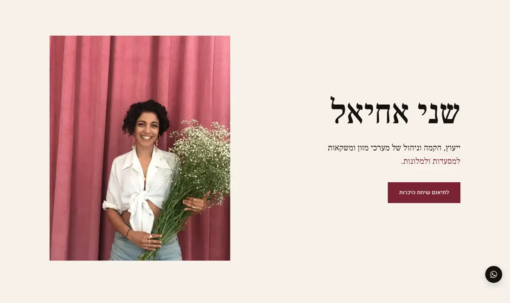
hero Atelier screen 1
Atelier screen 1press Atelier screen 2
Atelier screen 2 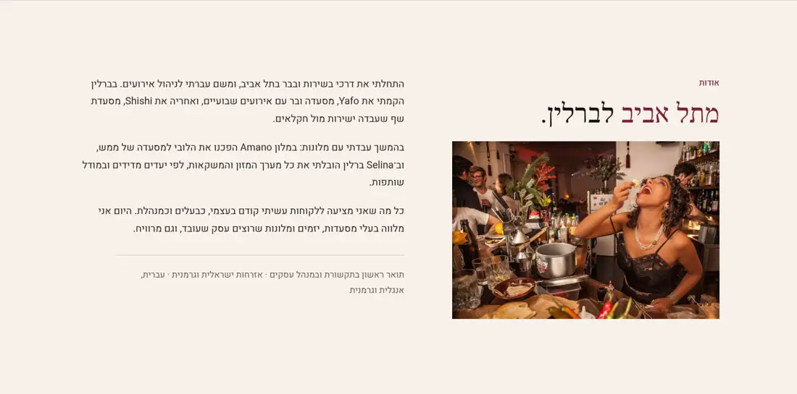
about Atelier screen 3
Atelier screen 3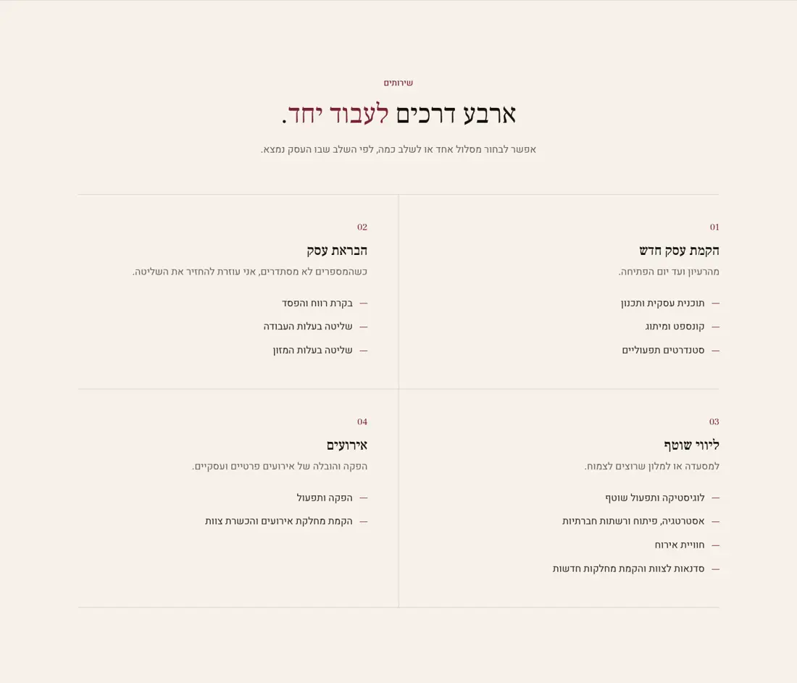
services Atelier screen 4
Atelier screen 4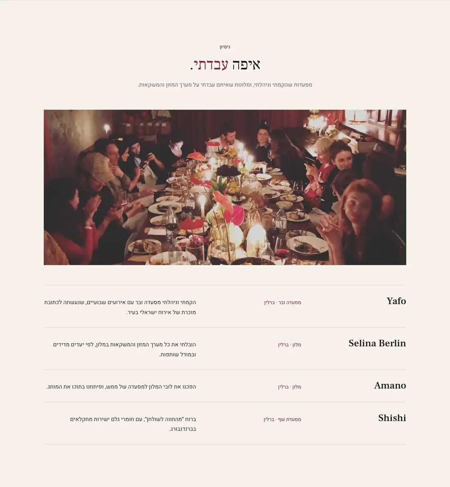
record Atelier screen 5
Atelier screen 5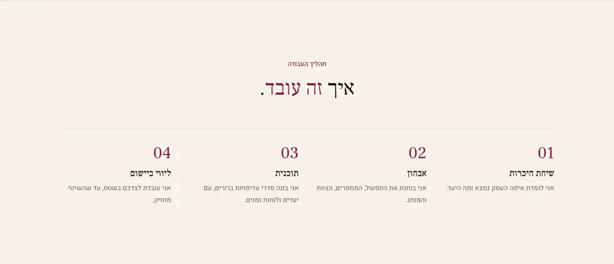
method Atelier screen 6
Atelier screen 6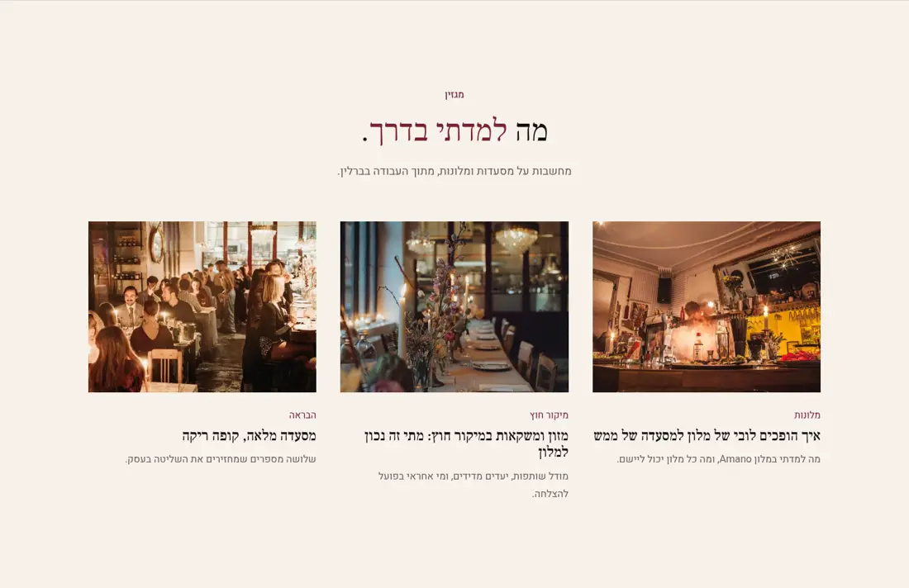
journal Atelier screen 7
Atelier screen 7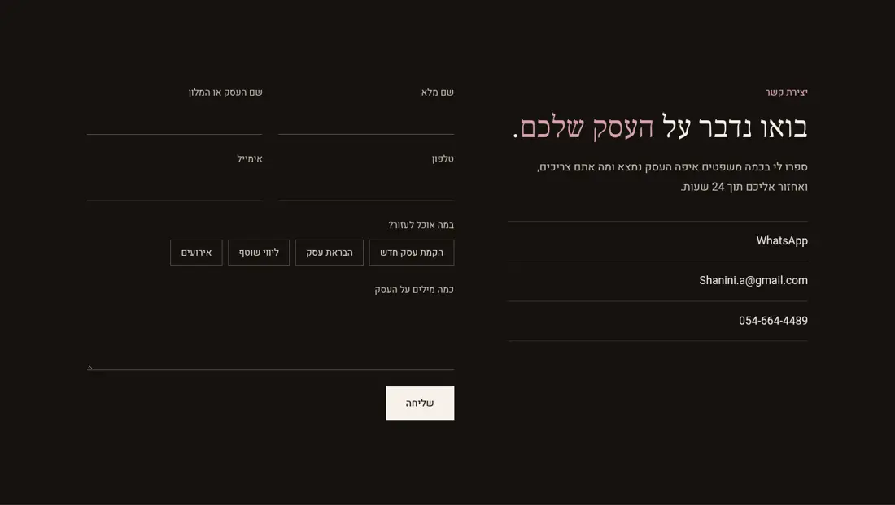
contact Atelier screen 8
Atelier screen 8FOOTER Atelier screen 9
Atelier screen 9  Atelier screen 10
Atelier screen 10 Atelier screen 11
Atelier screen 11Mobile 390
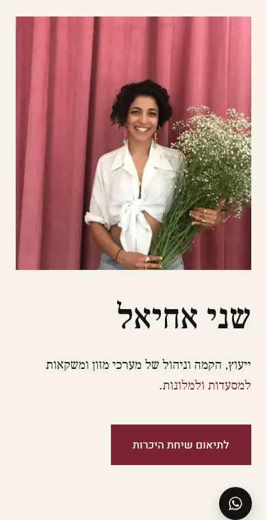
hero Atelier screen 1
Atelier screen 1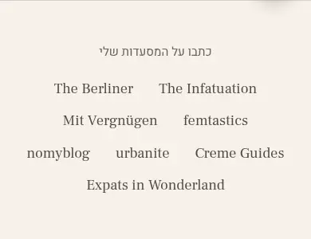
press Atelier screen 2
Atelier screen 2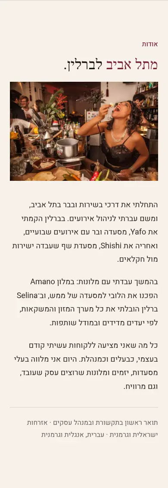
about Atelier screen 3
Atelier screen 3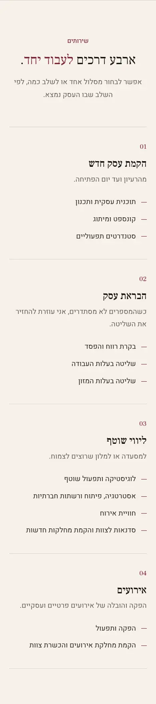
services Atelier screen 4
Atelier screen 4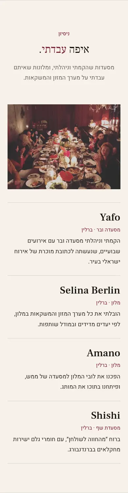
record Atelier screen 5
Atelier screen 5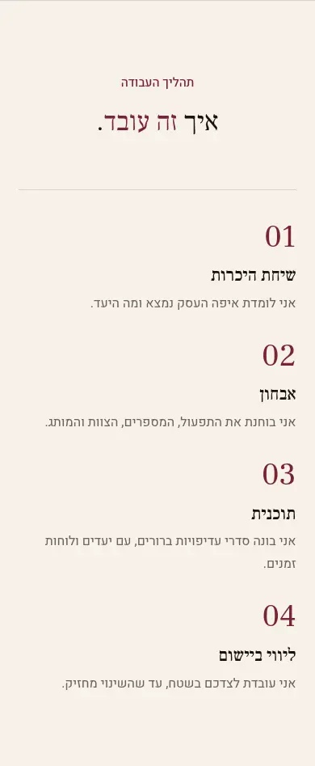
method Atelier screen 6
Atelier screen 6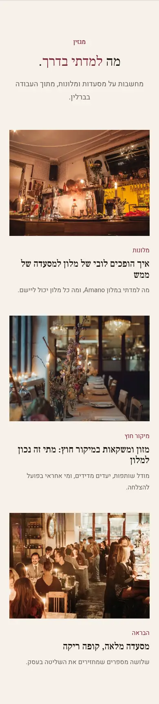
journal Atelier screen 7
Atelier screen 7contact Atelier screen 8
Atelier screen 8 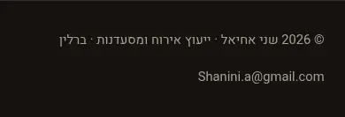
FOOTER Atelier screen 9
Atelier screen 9 Atelier screen 10
Atelier screen 10 Atelier screen 11
Atelier screen 11 Atelier screen 12
Atelier screen 12 Atelier screen 13
Atelier screen 13 Atelier screen 14
Atelier screen 14 Atelier screen 15
Atelier screen 15 Atelier screen 16
Atelier screen 16